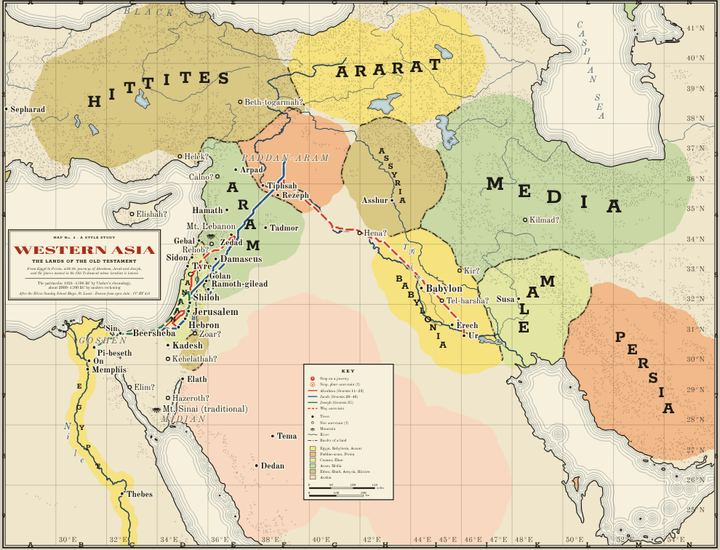
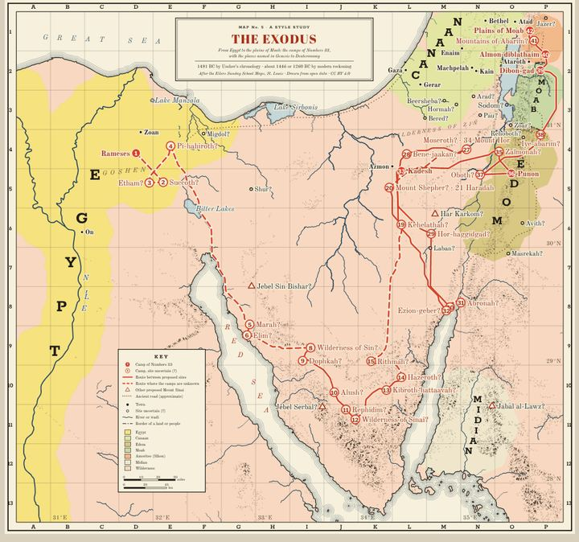
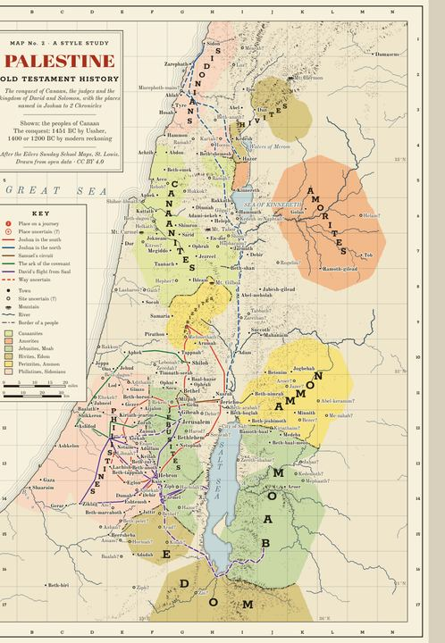
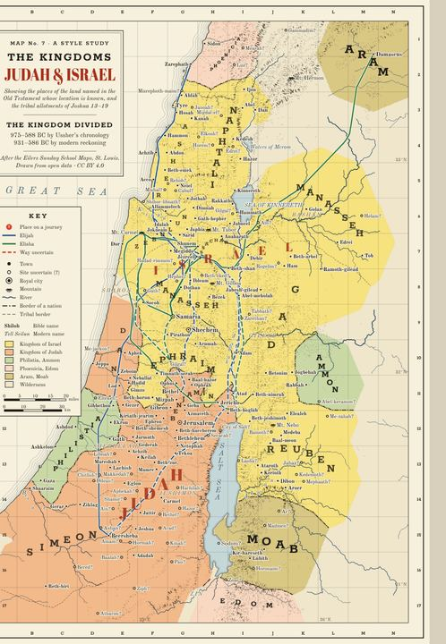
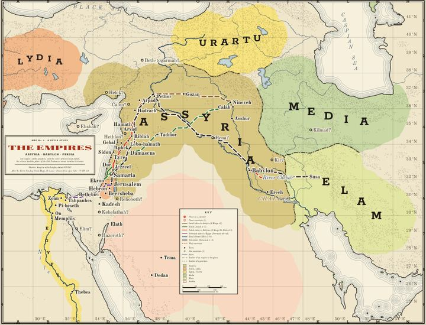
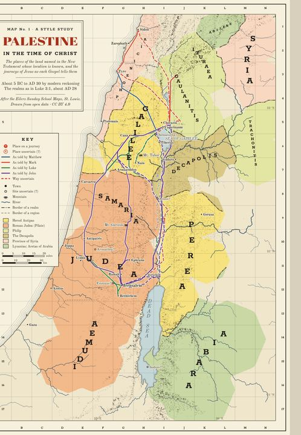
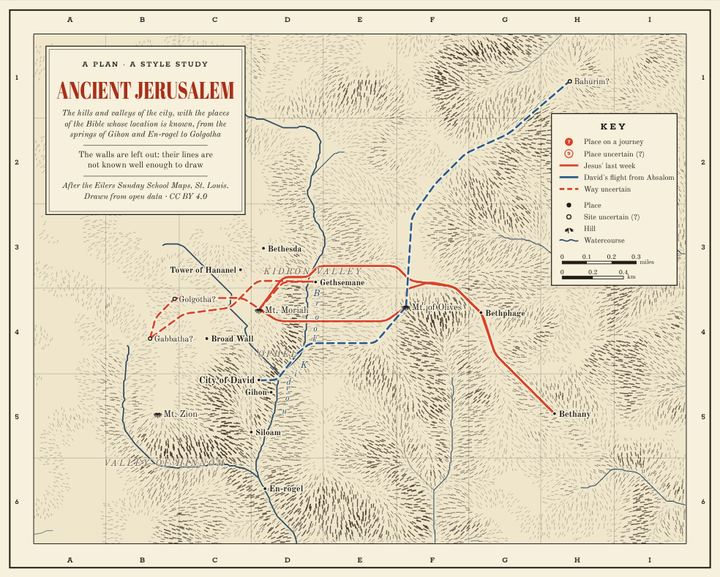
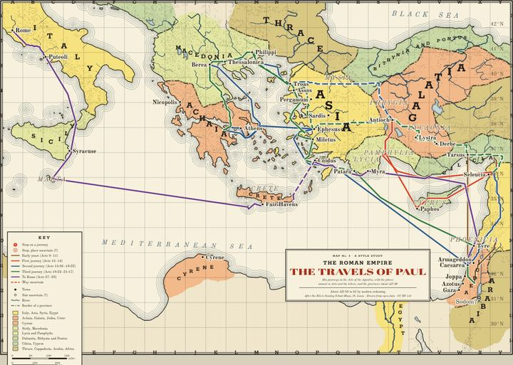

Eight sheets after the Eilers Sunday School wall maps (St. Louis, about 1890–1930), redrawn from open data. Each zooms on a phone, prints whole on a single page, and follows its journeys stop by stop, every stop named in the verse given. They are style studies and drafts: the borders are approximate and wait for review.
In the order of the Bible’s history

The patriarchs · about 2000–1700 BC
The lands of the Old Testament from Egypt to Persia, with the journeys of Abraham, Jacob and Joseph.
432 places · 33 stops on 3 journeys

The wilderness years · 1491 BC by Ussher
The 42 camps of Numbers 33 from Rameses to the plains of Moab, and the proposed sites of Mount Sinai.
81 places · 42 stops on 1 journey

The conquest to Solomon · about 1400–930 BC
The peoples of Canaan and the kingdom of David and Solomon, with Joshua's campaigns, the ark and David's flight.
337 places · 49 stops on 5 journeys

The divided kingdom · 931–586 BC
The tribal allotments of Joshua and the two kingdoms, with the journeys of Elijah and Elisha.
395 places · 27 stops on 2 journeys

The exile and return · about 740–440 BC
Three empires on one sheet, with the exiles of Israel and Judah, Jonah, and the return under Ezra and Nehemiah.
432 places · 20 stops on 6 journeys

The life of Jesus · about 5 BC to AD 30
The realms of Herod's sons and the Roman governor, with the places each Gospel names, in its order.
38 places · 67 stops on 4 journeys

From David to the apostles
The hills and valleys of the city with its known sites, Jesus' last week and David's flight from Absalom.
19 places · 16 stops on 2 journeys

The church spreads · about AD 35–62
The provinces about AD 50 and Paul's journeys in Acts, from Damascus to Rome.
66 places · 72 stops on 5 journeys
A classic atlas, in full
George Adam Smith & J. G. Bartholomew · 1915 · Public domain
Forty plates of the great Edinburgh atlas: the empires of the ancient world, Palestine at sixteen periods from the Judges to Agrippa II, Jerusalem at different periods, St. Paul’s travels, the seven churches and the spread of Christianity. Each opens to zoom.